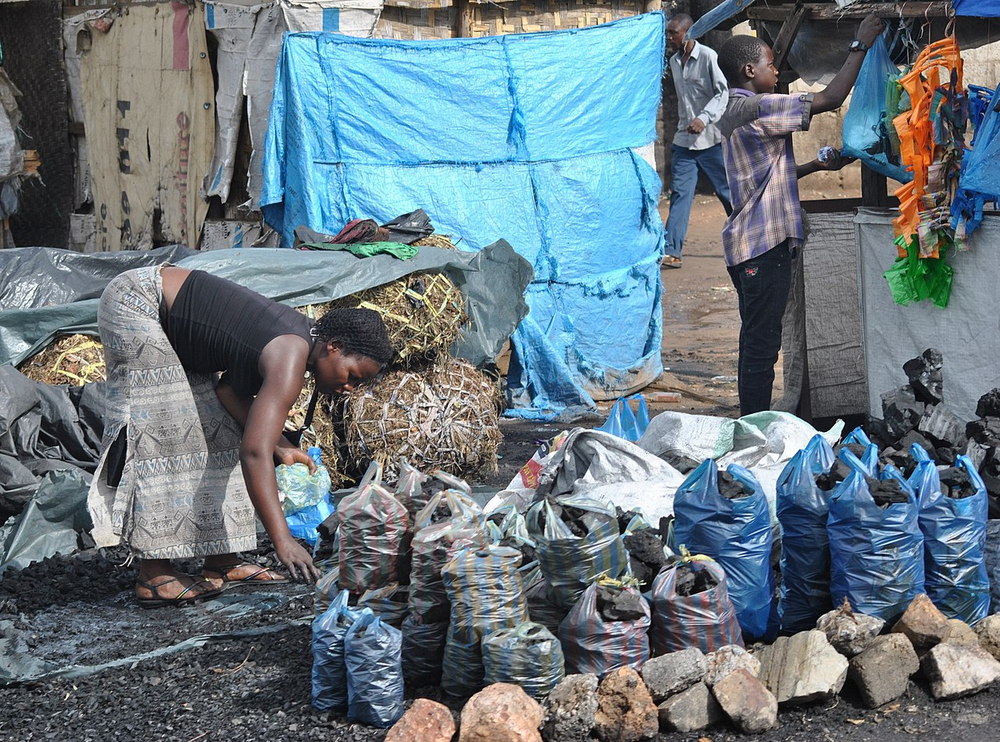

FSC Charcoal from Invasive Bush
Namibia’s core theme — turning encroaching bush into a certified product

What it is
The region runs on miombo and mopane charcoal and firewood; the question is not whether the wood is cut but how (FAO, 2017). Namibia’s core theme turns a problem — encroaching invasive bush — into a certified product: FSC-certified charcoal harvested from bush-encroaching species, restoring rangeland while creating a legal, premium wood-energy value chain.
How it works
- Harvest bush-encroaching woody species under Forest Stewardship Council (FSC) certification, restoring open rangeland
- Run licensed, rotation-based wood supply so cutting stays within regrowth
- Use improved kilns to raise yield and cut the wood needed per bag
- Pair with clean, efficient cookstoves to cut demand at the household end
- Channel the certified product to premium markets through producer organisations
Key facts
- Champion country
- Namibia
- Product
- FSC-certified charcoal; pearl millet (NUS)
- Feedstock
- Bush-encroaching species
- Co-benefits
- Rangeland restoration · legal premium market
- Tools
- Improved kilns · clean cookstoves
Charcoal is the woodland’s biggest commercial product and, cut faster than it regrows, its single biggest pressure (FAO, 2017; McNicol et al., 2018). Certifying the supply and sourcing it from invasive bush flips that pressure into restoration and a legal income.
WOCAT classification
- Measures
- VMVegetative · Management
- WOCAT group
- Natural and semi-natural forest management
- Degradation addressed
- Biological degradationBush encroachment
Classified per the WOCAT SLM-Technologies classification.
✦Source and links
- • Sustainable forest management for wood energy (profile)
- • Managing the woodland — and bringing it back
- • Pressures on the woodlands — charcoal
Sources (APA, 7th ed.).
- FAO. (2017). The charcoal transition: Greening the charcoal value chain to mitigate climate change and improve local livelihoods. Food and Agriculture Organization of the United Nations.
- McNicol, I. M., Ryan, C. M., & Mitchard, E. T. A. (2018). Carbon losses from deforestation and widespread degradation offset by extensive growth in African woodlands. Nature Communications, 9, 3045. https://doi.org/10.1038/s41467-018-05386-z